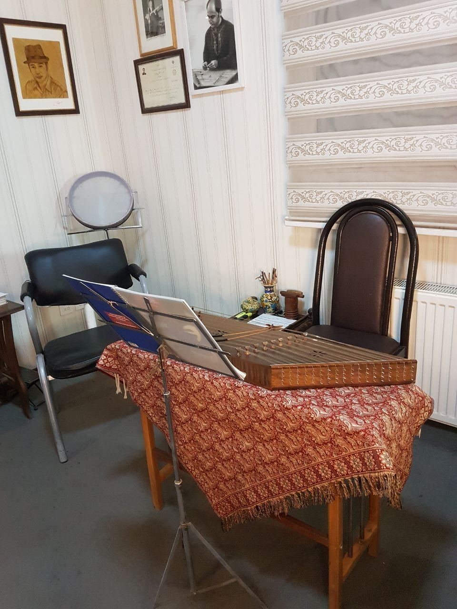

گزینه Aیشمی (Jade) — رنگ فعلی لوگو

آموزشگاه موسیقی آرامش · از ۱۳۹۵
خانهٔ موسیقی ایرانی
خانهٔ موسیقی ایرانی
در قلب تهران
آموزش ساز و آواز برای کودکان، نوجوانان و بزرگسالان، زیر نظر اساتید فعال در اجرا.
مشاوره و تماسآشنایی با دورهها
درباره ما
با مدیریت مسعود آرامش، آهنگساز و نوازندهٔ سنتور
بیش از چهل سال فعالیت در موسیقی، در فضایی آرام برای هنرجویان و علاقهمندان به هنر موسیقی.
داستان آموزشگاه
از ۷ سالکلاس خصوصی ساز
سنتور، تار، پیانو، ویولن و… با برنامهای متناسب با سن و هدف هنرجو.
بیشتر بدانیدگزینه Bزعفرانی (Saffron gold)
آموزشگاه موسیقی آرامش · از ۱۳۹۵
خانهٔ موسیقی ایرانی
خانهٔ موسیقی ایرانی
در قلب تهران
آموزش ساز و آواز برای کودکان، نوجوانان و بزرگسالان، زیر نظر اساتید فعال در اجرا.
مشاوره و تماسآشنایی با دورهها
درباره ما
با مدیریت مسعود آرامش، آهنگساز و نوازندهٔ سنتور
بیش از چهل سال فعالیت در موسیقی، در فضایی آرام برای هنرجویان و علاقهمندان به هنر موسیقی.
داستان آموزشگاهاز ۷ سال
کلاس خصوصی ساز
سنتور، تار، پیانو، ویولن و… با برنامهای متناسب با سن و هدف هنرجو.
بیشتر بدانید